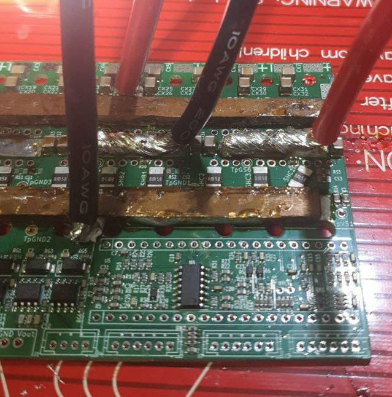
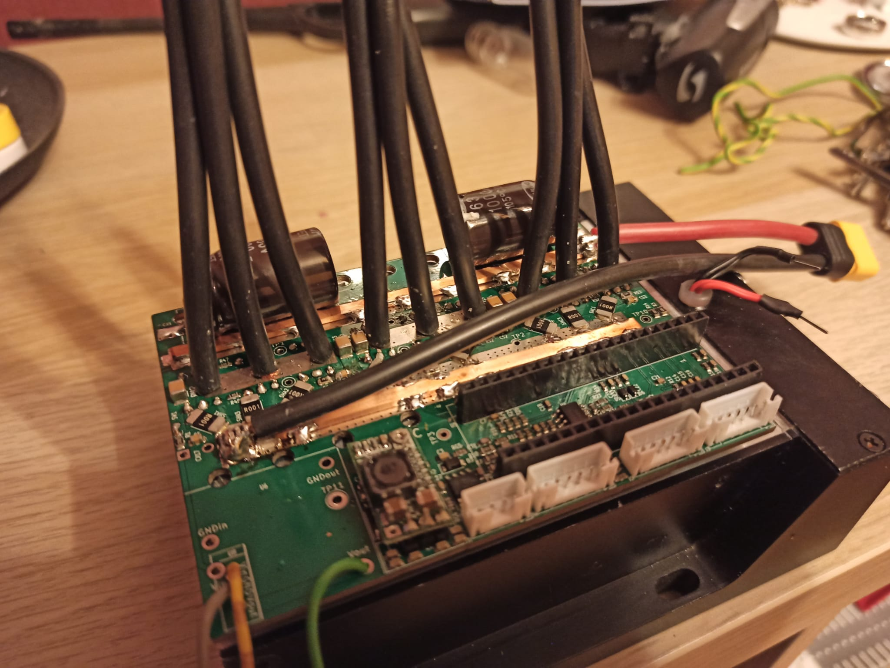
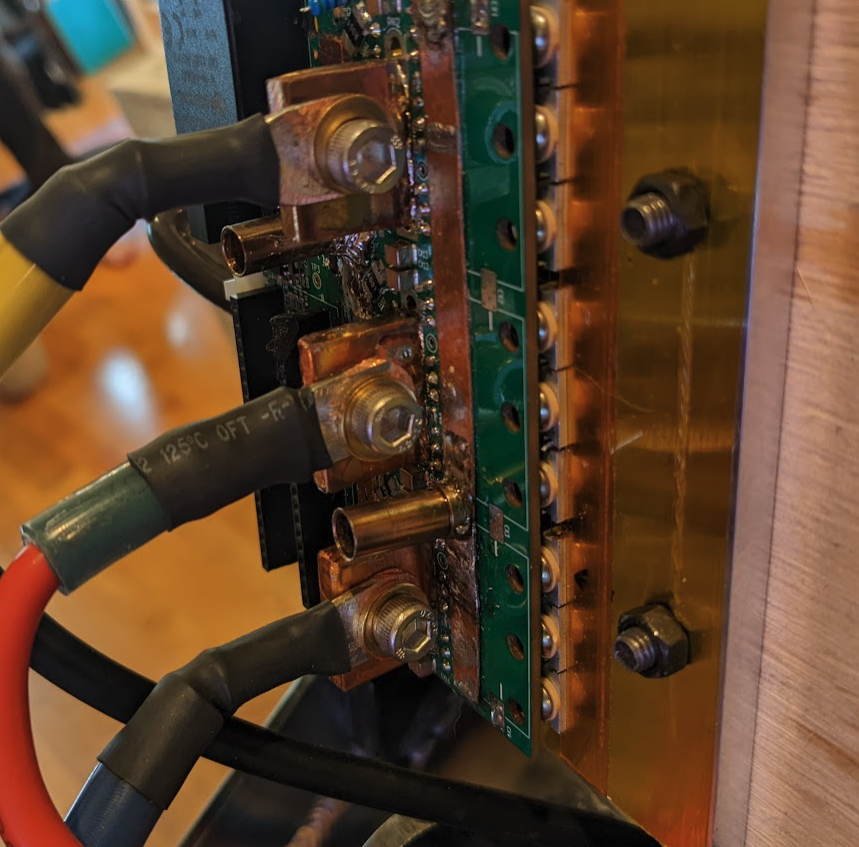
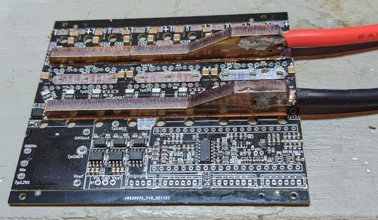
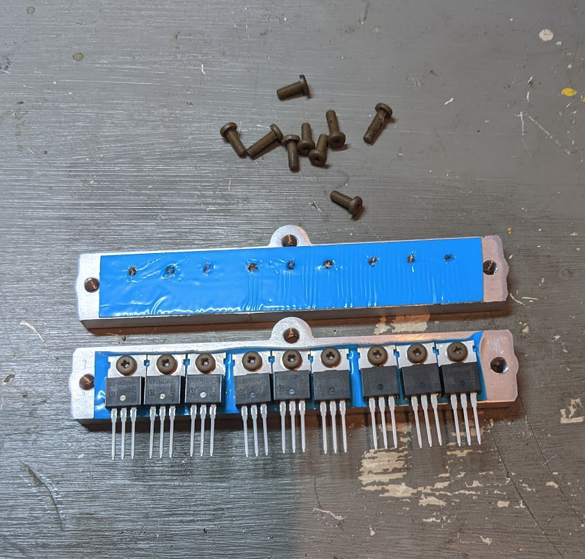
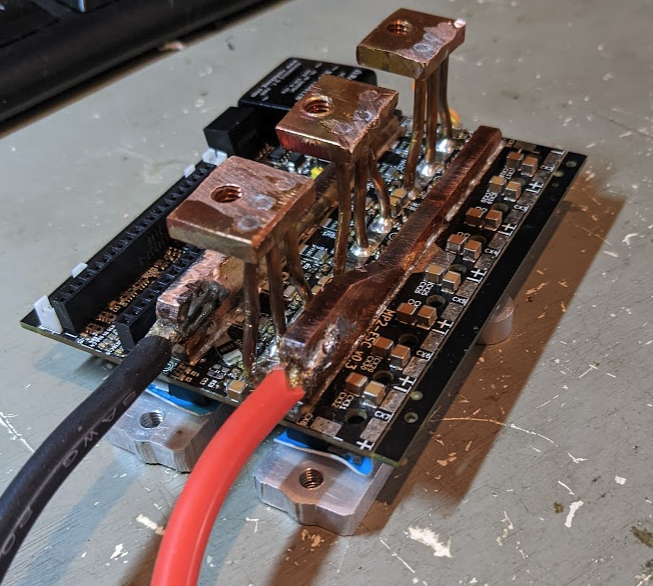
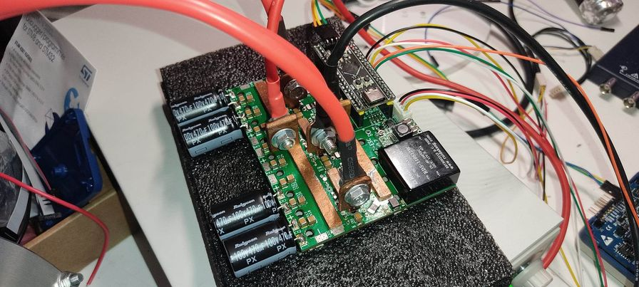

MP2 Assembly and Testing: high amperage methods
Items to note if you plan to run the MP2 at high amperage
- If you're using a hot plate or oven, add bus bars first
- Design bus bars to attach to heavy gauge wire
- Avoid bending, see below
- The mosfests MUST get some form of heat sinking
- None of this is easy for a beginner
Soldering big bus bars to the MP2 board is challenging: the larger the bar, the more heat is dissipated from your soldering iron so smaller irons will not work; another issue is that if youre not careful it you can start tacking down your bar, the bar expands and puts a bending force on your PCB. In some cases this creates a dangerous situation where the PCB is bent and has an increased likelihood of breaking thea ceramic caps.
One method of soldering bus bars that works very well is to use a soldering oven or hot plate. Take the hot plate or oven up to ~270°C, let the bars, solder and PCB all come up to temperature and allow to cool slowly. Because the expansion coefficient of the PCB (which has a lot of copper) and your bars is very similar, heating them all to the same temperature seems to reduce PCB bending.
Some successful examples:
 How not to do it.
In this case the problem is the large tabs of copper are likely to break off from the board if they receive lateral force.
Department of overkill
This is an example of using laser cut copper to add copper bus bars that solder directly to wires. Soldering was done in an oven.
Messing with heat sinks sucks as much as all the other assembly. In this case laser cut aluminium was used, and then threaded to receive the heatsink bolts and "High-Strength High-Temperature PEEK" bolts were used for attaching to heatsink plate. PEEK is type of plastic and reliable in harsh environments up to 260° C. The blue stuff is 3M thermal pad (Mfr# 5583S-10). Normal human beings use kaptan tape and M3 insulation grommets.
Final assembly with 2.5mm solid wire supports that have been soldered to threaded, copper pads. 
In addition to the added expense the downside of this method is soldering in all the MOSFETs with the big bus bars and phase wiring already in place is overly complicated.
 Nicely done.